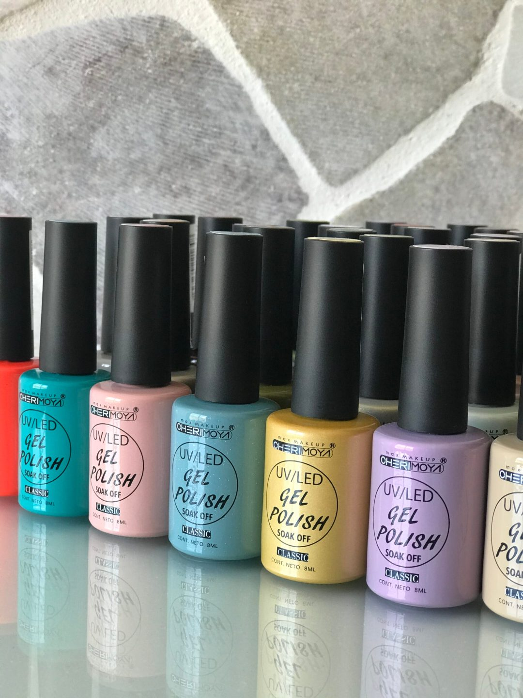
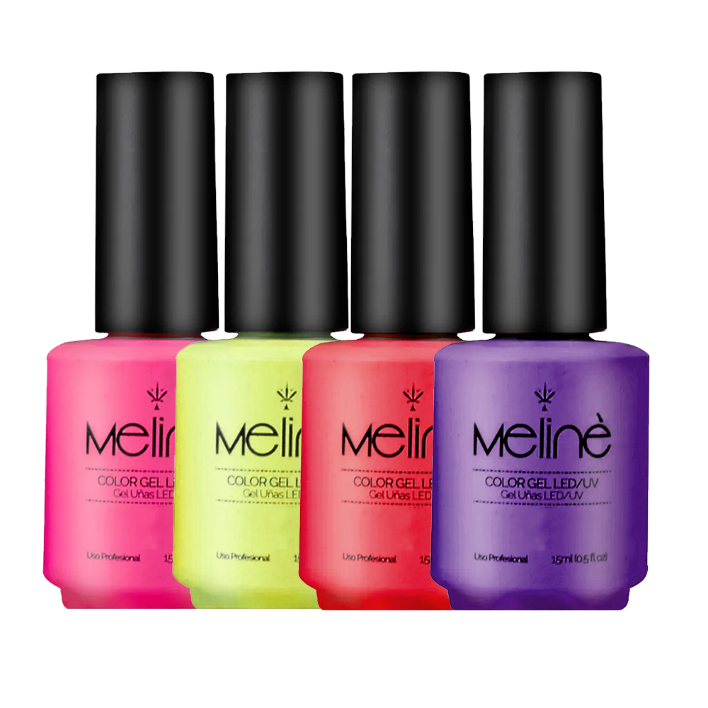
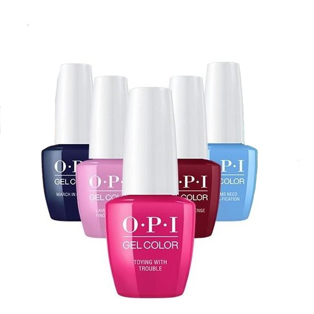
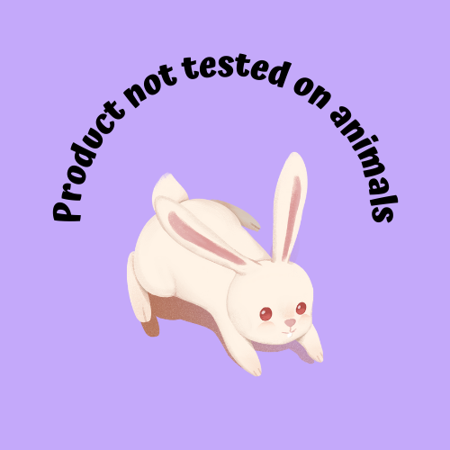
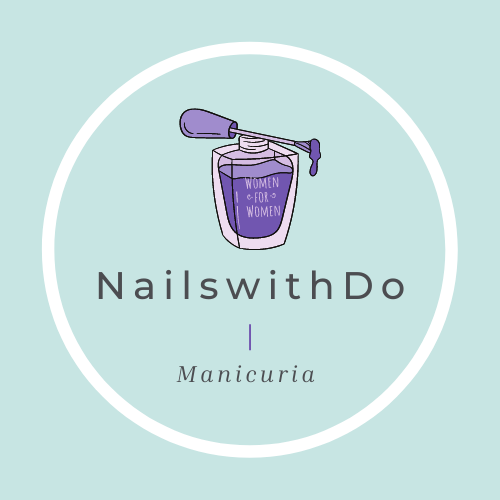
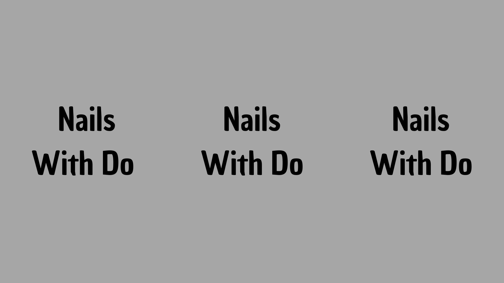

Cherimoya
Meline
OPI
Para aquellas personas que son alergicas, o padecen de piel sensible, utilizamos la marca OPI que es hipoalargenica.

Cruelty Free
En Nails With Do estamos en contra del testeo en los animales, por lo tanto garantizamos que todos nuestros productos sean Cruelty Free.

